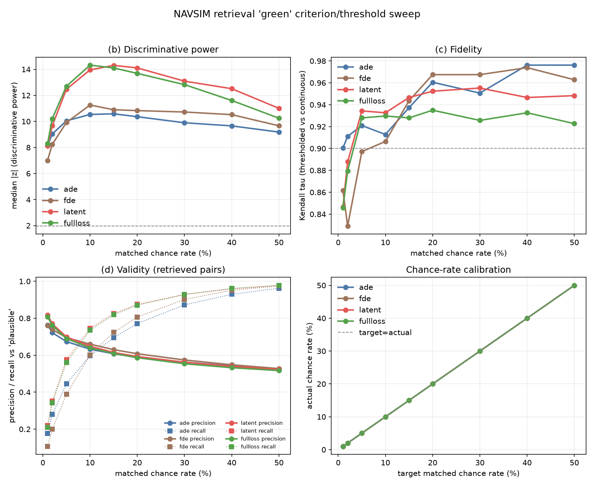

A retrieved neighbour is “green” when its ground-truth 4 s future is close to the query’s. This page tests four ways of measuring “close” over many thresholds, using every descriptor variant in the benchmark (2,000 queries, top-10 out of 12,146 navtest scenes, own log excluded). Both futures are GT, 8 waypoints at 0.5 s, each in its own t0 ego frame.
Green row = recommended setting. Best / worst = mean green count out of 10 for the best and worst variant (saturation check).
| Criterion | Chance | Threshold | Separating power | Significant | τ | Validity AUC | Best / worst |
|---|---|---|---|---|---|---|---|
| ADE (m) | 5% | 1.58 | 10.0 | 64/80 | 0.921 | 0.705 | 7.36 / 2.19 |
| ADE (m) | 10% | 2.25 | 10.5 | 63/80 | 0.913 | 0.705 | 8.88 / 3.38 |
| ADE (m) | 15% | 2.84 | 10.6 | 63/80 | 0.937 | 0.705 | 9.46 / 4.30 |
| ADE (m) | 20% | 3.44 | 10.4 | 64/80 | 0.961 | 0.705 | 9.75 / 5.07 |
| FDE (m) | 5% | 2.39 | 9.9 | 61/80 | 0.897 | 0.728 | 5.65 / 1.86 |
| FDE (m) | 10% | 3.95 | 11.3 | 62/80 | 0.906 | 0.728 | 8.00 / 3.25 |
| FDE (m) | 15% | 5.29 | 10.9 | 62/80 | 0.944 | 0.728 | 9.02 / 4.28 |
| FDE (m) | 20% | 6.51 | 10.8 | 62/80 | 0.967 | 0.728 | 9.48 / 5.09 |
| Speed latent (L1) | 5% | 0.43 | 12.5 | 63/80 | 0.934 | 0.756 | 7.23 / 2.66 |
| Speed latent (L1) | 10% | 0.59 | 14.0 | 65/80 | 0.933 | 0.756 | 8.59 / 3.96 |
| Speed latent (L1) | 15% | 0.71 | 14.3 | 66/80 | 0.947 | 0.756 | 9.16 / 4.85 |
| Speed latent (L1) | 20% | 0.82 | 14.1 | 64/80 | 0.952 | 0.756 | 9.43 / 5.54 |
| Full training loss | 5% | 0.39 | 12.7 | 63/80 | 0.928 | 0.745 | 7.39 / 2.57 |
| Full training loss | 10% | 0.55 | 14.3 | 66/80 | 0.930 | 0.745 | 8.74 / 3.94 |
| Full training loss | 15% | 0.67 | 14.1 | 63/80 | 0.928 | 0.745 | 9.26 / 4.86 |
| Full training loss | 20% | 0.78 | 13.7 | 65/80 | 0.935 | 0.745 | 9.52 / 5.60 |
| Chance | ADE power | Latent power | Latent − ADE | ADE precision | Latent precision |
|---|---|---|---|---|---|
| 1% | 8.1 | 8.1 | +0.00 | 0.764 | 0.818 |
| 2% | 9.0 | 9.7 | +0.63 | 0.722 | 0.770 |
| 5% | 10.0 | 12.5 | +2.43 | 0.674 | 0.699 |
| 10% | 10.5 | 14.0 | +3.42 | 0.632 | 0.649 |
| 15% | 10.6 | 14.3 | +3.72 | 0.608 | 0.615 |
| 20% | 10.4 | 14.1 | +3.75 | 0.589 | 0.593 |
| 30% | 9.9 | 13.1 | +3.19 | 0.563 | 0.562 |
| 40% | 9.7 | 12.5 | +2.86 | 0.542 | 0.540 |
| 50% | 9.2 | 11.0 | +1.82 | 0.525 | 0.523 |
Amber row = the current gallery setting.
| ADE ≤ | Chance | Power | Significant | τ | Best / worst |
|---|---|---|---|---|---|
| 0.25 m | 0.1% | 3.8 | 55/80 | 0.859 | 0.61 / 0.07 |
| 0.50 m | 0.5% | 6.6 | 64/80 | 0.884 | 2.06 / 0.37 |
| 0.75 m | 1.1% | 8.1 | 63/80 | 0.893 | 3.64 / 0.77 |
| 1.00 m | 2.0% | 9.0 | 67/80 | 0.913 | 5.06 / 1.20 |
| 1.50 m | 4.5% | 9.9 | 66/80 | 0.921 | 7.11 / 2.06 |
| 2.00 m (current) | 8.0% | 10.5 | 65/80 | 0.906 | 8.44 / 2.95 |
| 2.50 m | 12.0% | 10.7 | 62/80 | 0.921 | 9.18 / 3.77 |
| 3.00 m | 16.3% | 10.5 | 63/80 | 0.934 | 9.55 / 4.52 |
| 4.00 m | 24.7% | 10.3 | 64/80 | 0.954 | 9.88 / 5.71 |
| 5.00 m | 32.9% | 10.0 | 63/80 | 0.958 | 9.97 / 6.58 |
| 6.00 m | 40.9% | 9.6 | 64/80 | 0.977 | 9.99 / 7.29 |
| 8.00 m | 55.5% | 8.8 | 62/80 | 0.965 | 10.00 / 8.22 |
| 10.00 m | 67.6% | 7.8 | 60/80 | 0.955 | 10.00 / 8.86 |
Raw L1 distance in latent units.
| Latent ≤ | Chance | Power | Significant | τ | Best / worst |
|---|---|---|---|---|---|
| 0.21 | 1.0% | 8.1 | 60/80 | 0.847 | 3.33 / 0.78 |
| 0.27 | 1.8% | 9.4 | 61/80 | 0.885 | 4.63 / 1.25 |
| 0.34 | 3.0% | 11.5 | 63/80 | 0.905 | 6.01 / 1.87 |
| 0.43 | 5.1% | 12.3 | 64/80 | 0.935 | 7.29 / 2.70 |
| 0.55 | 8.6% | 13.9 | 65/80 | 0.935 | 8.35 / 3.67 |
| 0.70 | 14.4% | 14.2 | 66/80 | 0.949 | 9.12 / 4.77 |
| 0.89 | 23.7% | 13.7 | 64/80 | 0.962 | 9.57 / 5.95 |
| 1.14 | 37.0% | 12.6 | 60/80 | 0.944 | 9.81 / 7.14 |
| 1.44 | 53.5% | 10.7 | 63/80 | 0.939 | 9.92 / 8.17 |
| 1.84 | 70.7% | 7.9 | 64/80 | 0.904 | 9.97 / 9.04 |
| 2.34 | 85.2% | 5.4 | 61/80 | 0.876 | 9.99 / 9.57 |
| 2.98 | 95.0% | 3.2 | 49/80 | 0.808 | 10.00 / 9.83 |
| 3.79 | 99.0% | 2.4 | 51/80 | 0.705 | 10.00 / 9.93 |
